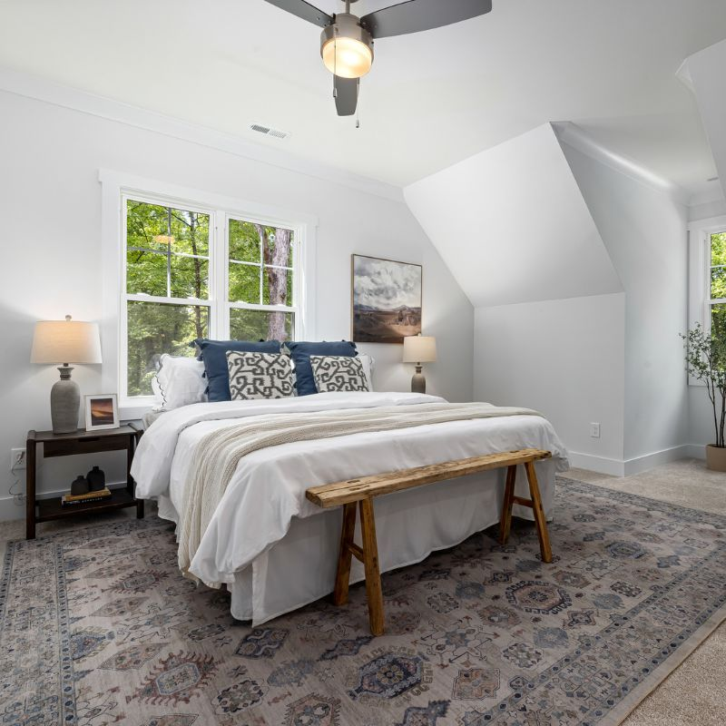
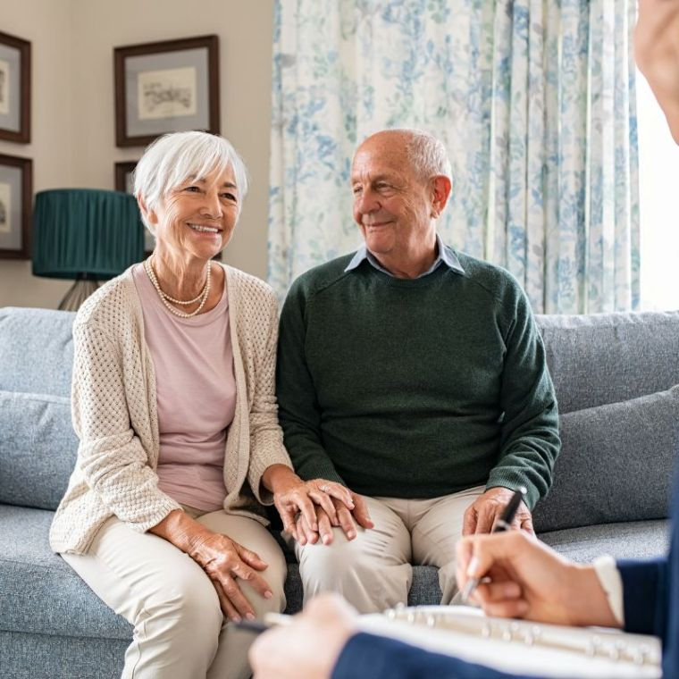
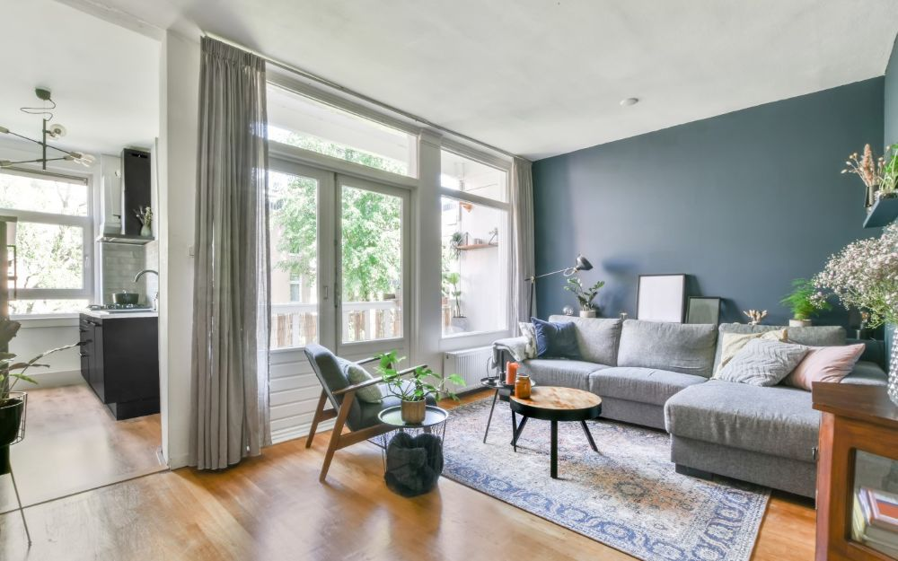
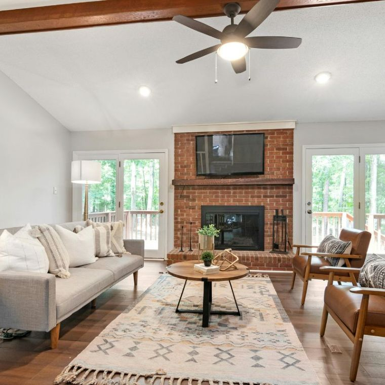
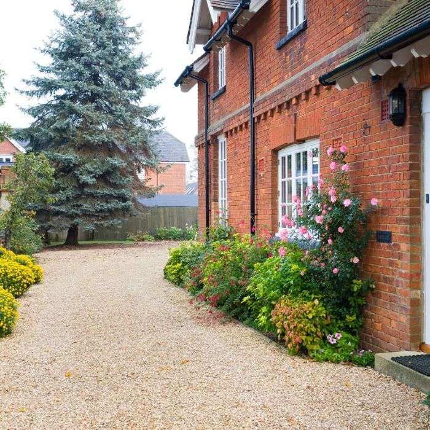
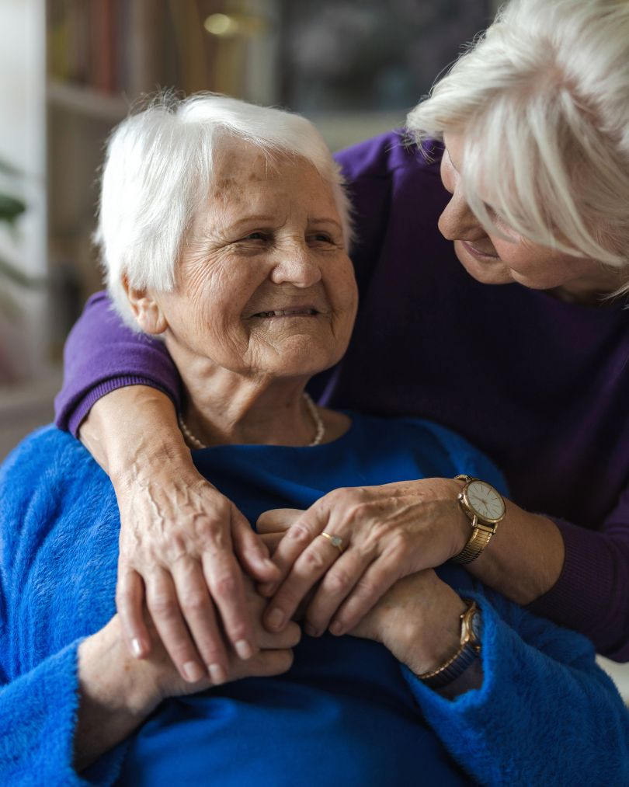

Bedrooms
Individual single bedrooms with their own character.
Residential care services
Warm elderly care, daily assistance, personal care, individual rooms, shared lounge spaces and a calm homely setting for families looking for a residential care home in Rhosneigr, Anglesey and across North Wales.
Our services
Bodelwyddan Residential Care provides elderly residential care in Rhosneigr, Anglesey, with personal day-to-day support, help with washing, dressing and personal care, comfortable rooms, shared lounge spaces, local professional links and clear communication for families comparing care homes across Anglesey and North Wales.

A safe, calm and homely setting for elderly residents who benefit from daily assistance, personal care, familiar routines and a smaller care home environment.
Read more
16 individual single bedrooms, many with en-suite facilities and TVs, plus a call system in every room and shared spaces including a main lounge and sun-lounge.
View roomsWe work with local doctors, district nurses, social workers and community mental health specialists where residents need additional support.
See supportResidential care
Bodelwyddan Residential Care supports older people with day-to-day assistance in a small, calm and homely environment. Residential care can include help with washing, dressing, personal care, daily routines and many other everyday tasks, while helping residents feel safe, comfortable and well supported.
Our residential care service is designed for people who would benefit from daily support, comfort and reassurance in a homely care setting. We are always happy to speak with families about the type of support their loved one may need.
Residential care is suitable for people who need daily assistance and help with day-to-day living, such as washing, dressing, personal care, meals, routines and general support. Nursing care is usually for more complex clinical needs where nurses need to be on duty 24 hours a day, such as regular clinical nursing tasks or more intense nursing care.
If you are unsure what type of care your loved one may need, please feel welcome to call us. We are always happy to talk through their needs and help you understand the most suitable next step.
Rooms and facilities
Every room is individual, and the home has 16 single bedrooms, many with en-suite facilities and TVs. Every room is fitted with a call system so residents can ask for assistance when needed. Alongside residents’ bedrooms, the home also has a main lounge where residents sit together, chat, discuss what is on the television and enjoy time together, as well as a quieter sun-lounge overlooking the front garden.

Individual single bedrooms with their own character.

A shared space where residents can chat, watch television and enjoy companionship.

A quieter sun-lounge overlooking the front garden, with parking and outdoor space.
Professional support
Bodelwyddan is known locally and works with relevant professionals where residents need additional input. This helps families feel reassured that support can be coordinated when needed.
We work with medical professionals who know the home and support residents where appropriate.
District nurses may be involved where a resident requires extra assistance and care coordination.
We work with social workers when practical care planning and family support are needed.
Community mental health specialists know the home and work with us where relevant.
A visiting chiropodist and hairdresser have been coming to the home for many years.
Care reassurance
When families compare residential care homes in Rhosneigr, Anglesey and North Wales, they usually want clear signs of safety, comfort, routine and communication. These service highlights explain what makes Bodelwyddan Residential Care feel personal, local and reassuring.

Location focus
Families often search for a care home close enough to visit regularly. Bodelwyddan Residential Care is based in Rhosneigr, LL64 5JG, only a few minutes’ walk from Broad Beach, and welcomes enquiries from families across Anglesey, including Holyhead, Llangefni, Bangor, Caernarfon, Menai Bridge and the wider North Wales area.
Helpful answers
Clear answers for families comparing residential care homes in Rhosneigr, Anglesey and nearby North Wales areas.
Talk to us
If you are looking for residential care for a loved one, please feel welcome to get in touch. We are always happy to talk through care needs, explain how residential care works, and welcome families to visit so they can experience the warmth and homely atmosphere for themselves.